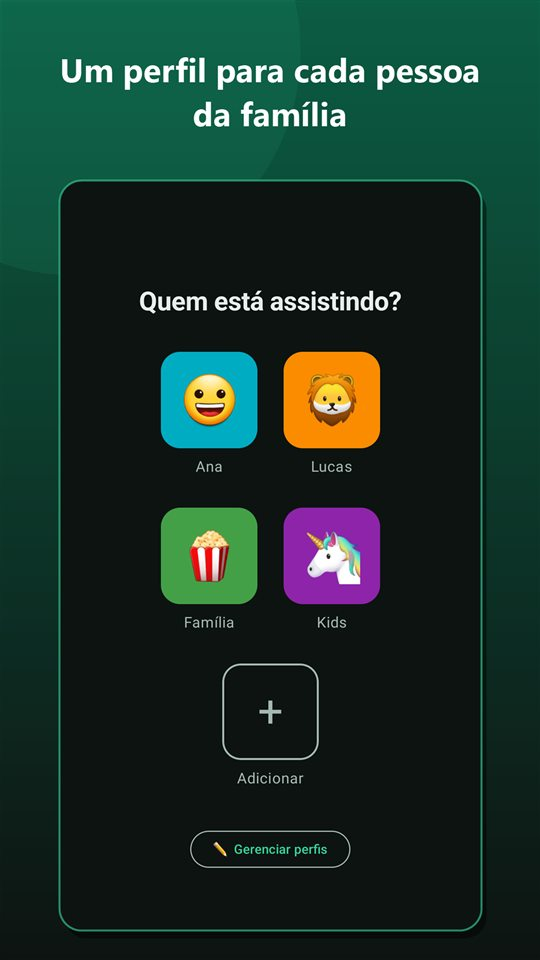
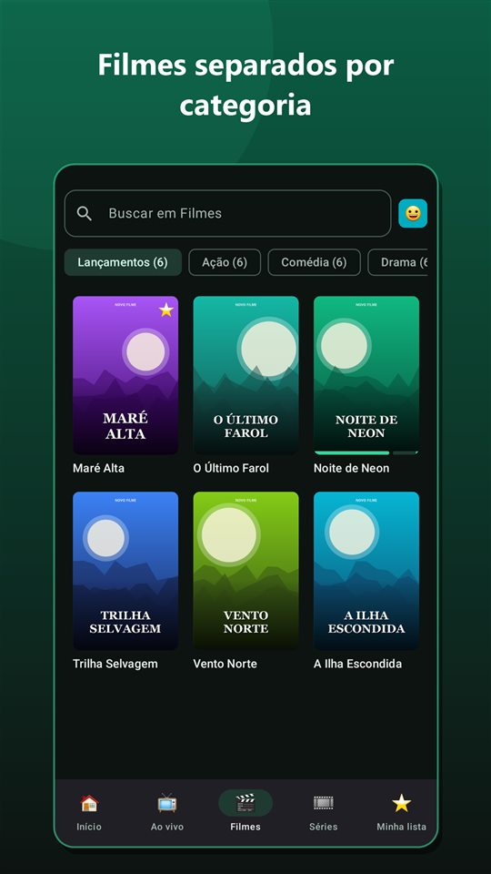
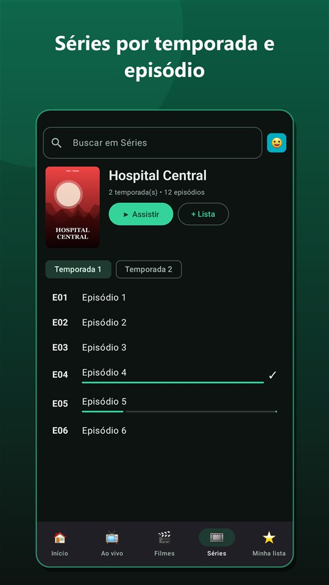
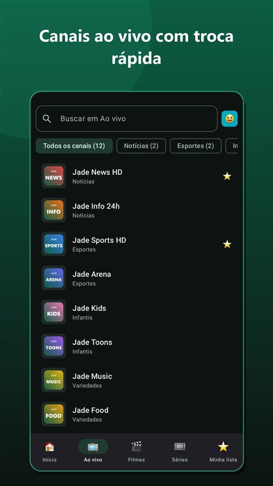
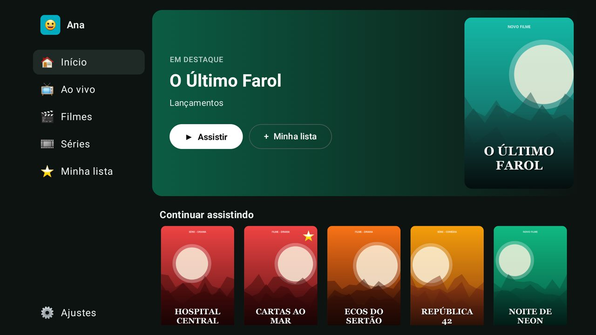
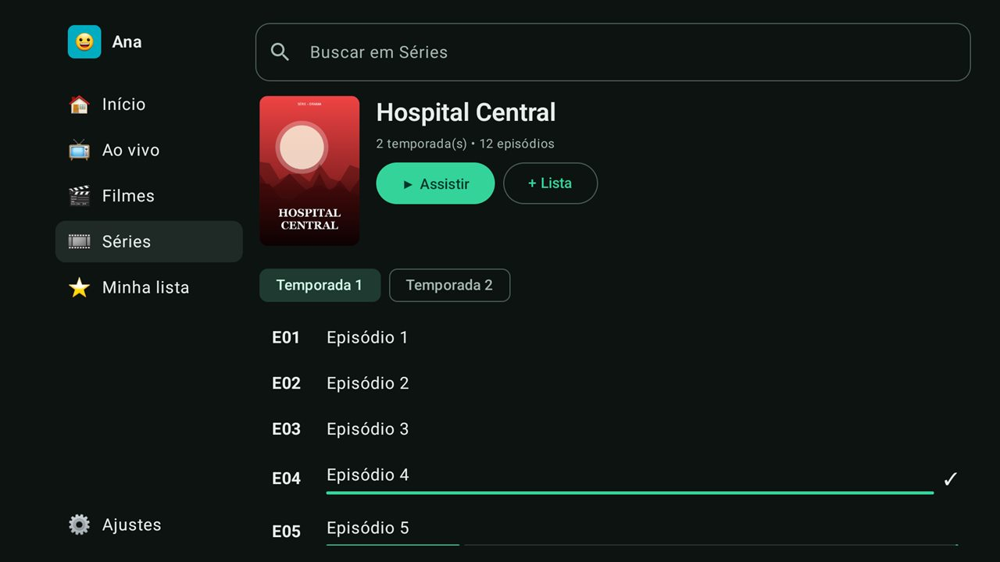

Sua lista de TV, filmes e séries, organizada.
O Jade Play transforma sua lista de IPTV em uma experiência de streaming: TV ao vivo, filmes e séries separados, perfis para a família e "Continuar assistindo". No celular, no tablet e na Android TV.
0 downloads
Tudo no seu lugar
Entre com os dados do seu provedor (conta Xtream Codes ou lista M3U) e o Jade Play organiza tudo automaticamente.
TV ao vivo
Canais por categoria e troca rápida com ▲/▼ ou CH+/CH- no controle, ou deslizando o dedo.
Filmes e séries
Capas, sinopses e séries agrupadas por temporada e episódio.
Perfis
Até 5 perfis, cada um com a sua Minha lista e o seu Continuar assistindo.
Continue de onde parou
Filmes e episódios retomam do ponto em que você parou; o próximo episódio começa sozinho.
Feito para TV
Interface adaptada para Android TV e TV Box, com navegação completa pelo controle remoto.
Rápido e leve
A lista é organizada uma vez e salva no aparelho: o app abre em segundos, mesmo com listas enormes.
Veja como fica
Imagens ilustrativas com conteúdo de demonstração. O conteúdo exibido no app é o da sua própria lista.






Como instalar
Versão atual: carregando…. Para atualizar, é só baixar e instalar a versão nova por cima — seus perfis e listas são mantidos.
- Toque em Baixar APK (de preferência no navegador Chrome).
- Ao terminar o download, toque no arquivo JadePlay.apk na notificação ou na pasta Downloads.
- Se o Android pedir, permita "Instalar apps desconhecidos" para o navegador e volte.
- Toque em Instalar e depois em Abrir. Entre com os dados do seu provedor.
- Na TV, instale o app Downloader (da AFTVnews) pela Play Store.
- Em Configurações → Apps → Segurança e restrições → Fontes desconhecidas, ative o Downloader.
- Abra o Downloader e digite o endereço:
carregando… - Quando o download terminar, toque em Instalar. O Jade Play aparece na lista de apps da TV.
Outra opção: copie o APK para um pendrive e abra-o na TV com um gerenciador de arquivos (ex.: File Commander).
Novidades
Histórico de versões do Jade Play.
Carregando…
Dúvidas frequentes
O Jade Play já vem com canais, filmes ou séries?
Não. O Jade Play é apenas um reprodutor. Você precisa de uma assinatura ou lista própria, fornecida por um provedor autorizado, no formato Xtream Codes ou M3U.
Funciona em quais aparelhos?
Celulares e tablets com Android 7.0 ou superior, Android TV, Google TV e TV Box Android. Não funciona em iPhone, Roku, Samsung Tizen ou LG webOS.
Como atualizo o app?
Volte a esta página, baixe a versão mais recente e instale por cima. Seus perfis, Minha lista e histórico continuam salvos.
O Android diz que o app é de "fonte desconhecida". É seguro?
Esse aviso aparece para qualquer app instalado fora da Play Store. O APK publicado aqui é assinado digitalmente pela FFI Digital; a impressão digital do certificado está na seção Novidades.
Meus dados são enviados para algum lugar?
Não. Login, perfis e histórico ficam salvos somente no seu aparelho. Veja a política de privacidade.